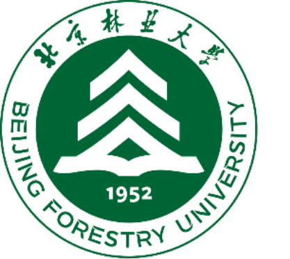

Apr. 2026
– Present2026.04
— 至今
– Present2026.04
— 至今

THUNLP清华大学自然语言处理与社会人文计算实验室 & 与Qiyuan Lab启元实验室
Research on Earth observation agents, focusing on long-horizon, real-world tasks.开展地球观测智能体研究，聚焦长程真实任务的处理。
Ph.D. Student in Hydrological Modeling UCAS水文建模方向博士研究生 中国科学院大学
Last updated: October 9, 2026更新日期：2026 年 10 月 9 日

I am a Ph.D. student at the University of Chinese Academy of Sciences (UCAS) and the Institute of Geographic Sciences and Natural Resources Research, Chinese Academy of Sciences.我目前就读于中国科学院大学与中国科学院地理科学与资源研究所，攻读博士学位。
Since April 2026, I have collaborated with THUNLP & Qiyuan Lab on Earth observation agents.自 2026 年 4 月起，我与清华大学自然语言处理与社会人文计算实验室及启元实验室合作开展地球观测智能体研究。
My research centers on hydrological modeling, including the development of differentiable physics-based hydrological models and high-resolution groundwater mapping.我的研究围绕水文建模展开，主要开展可微分物理水文模型开发与高分辨率地下水制图。
I am seeking internship opportunities in AI agent research.我正在寻找人工智能智能体研究方向的实习机会，欢迎与我联系。
Contact me:联系方式：yuzhounan22@mails.ucas.ac.cn+86 135 6315 2549
Research on Earth observation agents, focusing on long-horizon, real-world tasks.开展地球观测智能体研究，聚焦长程真实任务的处理。

Research on hydrological modeling.开展水文建模研究。

An Earth observation agent framework that improves policies and reusable skills together. Verified execution states support credit assignment and skill evaluation, connecting learning to what the agent actually accomplished.构建地球观测智能体框架，推动策略与可复用技能协同进化。利用可验证的执行状态进行信用分配与技能评估，使学习过程与智能体实际完成的任务及其执行结果相联系。

An executable benchmark with 101 subtasks drawn from 30 peer-reviewed publications for real-world, long-horizon scientific investigations in Earth observation. Each case links subtasks through intermediate artifacts around a scientific objective, with reproduced reference results and human-reviewed scoring rubrics. Scientific conclusions are linked to supporting artifacts and execution evidence to assess scientific validity throughout the workflow. Evaluation spans six language models and three agent harnesses, with the best configuration achieving a case-averaged Rubric score of 44.3.基于 30 篇同行评审论文构建 101 个子任务，覆盖真实、长程的地球观测科学研究。每个案例围绕一个科学目标，通过中间产物串联子任务，并提供复现的参考结果与经人工审核的评分标准，将科学结论与支撑产物、执行证据关联起来，评估智能体在完整工作流中保持科学有效性的能力。评测覆盖 6 个语言模型与 3 种智能体执行框架，最佳配置的案例平均评分标准得分为 44.3。

Developing differentiable hydrological models for detailed groundwater-depth simulation and recovery analysis in the North China Plain, and exploring groundwater mapping methods that combine physical simulation with machine learning. Using CWatM–MODFLOW simulation outputs together with precipitation, soil properties, and other data, a random forest learns the residuals between observations and simulations to produce high-resolution groundwater-level maps. Model refinement is guided by failure-case analysis and physical consistency checks during debugging.面向华北平原地下水埋深精细模拟与恢复分析，开展可微分水文模型搭建，并探索物理模拟与机器学习相结合的地下水制图方法。以地表水—地下水耦合物理模型的模拟结果为数据基础，结合降水、土壤属性等数据，利用随机森林学习观测与模拟之间的残差，绘制高精度地下水位地图。在模型调试过程中，通过失败案例分析与物理一致性检验调整模型。

Zhounan Yu et al. (Second author)（第二作者）
Developed an analytical framework for quantifying social–ecological resilience, using ecosystem-service trade-offs and carbon footprint per unit economic output to examine changes in system functioning and adaptive capacity under different management practices. This work provides a foundation in ecosystem services, environmental disturbances, and adaptation mechanisms for understanding resilience in the context of climate change.围绕社会—生态系统韧性的量化表征，构建分析框架，通过生态系统服务之间的权衡与单位产值碳足迹等指标，分析管理措施变化下系统功能与适应能力的变化。这项研究积累了生态系统服务、环境扰动与适应机制方面的知识，为理解气候变化背景下的系统韧性与适应问题提供基础。

Zhounan Yu et al. (First author)（第一作者）
Quantified greenhouse gas emissions across cultivation and processing, and analyzed how fertilizer use, energy inputs, and management practices contribute to production carbon footprints. Comparing emission sources and mitigation options builds an understanding of trade-offs among resource use, economic returns, and environmental impacts, informing perspectives on low-carbon transitions and system resilience.开展生产系统碳足迹核算，量化种植与加工环节的温室气体排放，分析施肥、能源投入及管理措施对排放的影响。通过比较排放来源与减排途径，理解资源利用、经济收益和环境影响之间的权衡，为分析低碳转型与系统韧性的关系积累知识基础。
Integrated master’s–doctoral program
GPA: 3.87/4 · Director’s Scholarship; Institute Merit Student硕博连读
平均成绩：3.87/4 · 所长奖学金、所三好学生

Undergraduate
GPA: 93.53/100 · National Scholarship; Outstanding Graduate; Outstanding Undergraduate Thesis本科
平均成绩：93.53/100 · 国家奖学金、优秀毕业生、优秀毕业论文